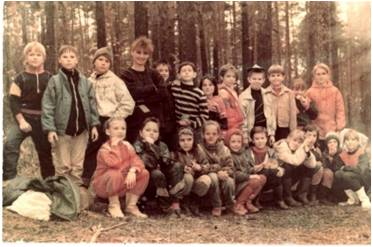
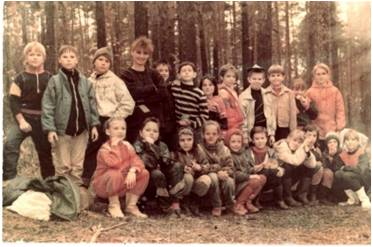

Этапы истории школы


- I период – 1935-1941 годы Первого сентября 1935 года первые ученики вошли в новые светлые классы каменной школы № 7. Наша школа действительно стала первой каменной школой, её так и называли «Каменная», в отличие от остальных деревянных школ.
По воспоминаниям ветеранов, краска на полах еще недостаточно просохла, и ребятишки в первый день буквально вынесли эту краску на своих ботинках.
Впервые годы учиться было непросто: не хватало тетрадей, наглядных пособий, учебников. Нередко на весь класс приходилось по 4 учебника, ими пользовались по очереди. Но, по воспоминаниям учеников тех лет, в это трудное время не было случая, чтобы кто-то пришел неподготовленным к уроку.
В музее школы сохранились фотографии тех лет, по которым мы можем представить, какой была школа в 30-х годах. Просторные классы со свежевыбеленными стенами и потолком обставлены очень скромно: традиционные парты с наклонными столешницами, учительский стол, школьная доска на ножках, шкаф для учебных пособий. В начальных классах – большие счеты. Везде на партах стоят чернильницы – современные дети и не знают, что это такое. У школьников 30-х годов единой формы не было, зато учителя чаще всего ходили в строгих костюмах или темных платьях.
В нашем музее есть фотография, где мы видим, как проходит урок математики в 1 «В» классе. Урок ведет Бородина Антонина Семеновна, ставшая завучем школы. 27.12.1936 года Антонина Семеновна была арестована и осуждена, как враг народа с мерой наказания 5 лет исправительно-трудовых лагерей.
Первым директором школы № 7 была назначена Антонина Васильевна Цыкина, строго требовавшая от учителей соблюдения трудовой дисциплины. В эпоху первых пятилеток за опоздание на 1-2 минуты наказывались и рабочие УВЗ, и учителя школы. А с музейных фотографий на нас смотрят смешливые, любопытные, удивленные и озорные лица мальчишек с наголо побритыми головами и девчонок с короткими стрижками – это дети предвоенной поры.
Учителя, работающие в это время: Бородина Антонина Семеновна (завуч), К.Н. Покровская, К.И. Борейшо, Е.А. Рязановская, Лебедева (учителя русского языка и литературы)

- II период – 1941-1945 годы Великая Отечественная война изменила жизнь школы. На фронт ушли педагоги школы № 7.
На УВЗ эвакуируются предприятия из центра страны, увеличивается количество людей живущих на Вагонке, увеличивается количество учеников в школе. С 15 августа вводятся карточки на хлеб, а с ноября – на другие продукты.
В 1942 году из-за того, что в некоторых школах города были размещены госпитали, в школе № 7 увеличилось количество классов. Седьмая школа приняла на свою территорию всех, кто в ней нуждался: сюда перешли ученики и учителя школы № 8 (современная школа № 9) и вечерняя школа № 2.
В этот период школа работала в три смены. Жили впроголодь, но учеба не прекращалась, каждый год все классы с 4-го по 10 сдавали экзамены по всем предметам. Хотя в школе была своя котельная, в классах было все-таки холодно, так как не хватало топлива. Чтобы заработать уголь для школы, ученики с учителями, когда днем, а когда и ночью разгружали вагоны с углем и сами перевозили его на школьный двор.
С мая по сентябрь ученики и учителя трудились на колхозных полях, в заводских подсобных хозяйствах. Многие старшие школьники были мобилизованы на работу на УВЗ. Оставшиеся в школе ученики организуют тимуровское движение «Все для фронта, все для победы!». .
Учителя, работающие в это время:
И.А. Касс (учитель математики), А.В. Силин (учитель истории), Анастасия Никифоровна Краюхина,
Анна Ивановна Архирейская, Елизавета Петровна Сапожникова,
Татьяна Павловна Мищенко, Жанна МироновнаБурнашова, Екатерина Александровна Виниченко,
Иван Леонтьевич Братилов (завуч,учитель истории)


- III период – 1945-1983 годы В послевоенные годы школа № 7 была женской - в ней обучались только девочки, которые должны были кроме основных школьныхпредметов усвоить такие качества как доброта, женственность, культура поведения. В этот период седьмая школа дружила со школой № 9, где учились одни мальчики. Проводились совместные сборы и вечера. В конце 40-х годов в школе появилась единая форма: девочки ходили в коричневых платьях с белыми воротничками и в черных фартуках, по праздничным дням поверх платья надевался белый фартук. В конце 50-х из женской седьмая школа вновь превратилась в общую.
В послевоенные годы в школе назрела необходимость в спортзале, строительство которого не было предусмотрено сметой. В 1960 году по предложению директора школы К.И. Борейшо на собрании педагогического коллектива и родительского комитета было принято решение построить спортивный зал собственными силами методом народной стройки. В работе принимали участие шефы с УВЗ, родители, учителя и ученики. Это была действительно народная стройка. Фотоснимки из школьного музея показывают, как вручную перетаскивались кирпичи, цемент и другие стройматериалы по лесам—наверх. Когда спортзал был построен, состоялось веселое новоселье. В новом зале состоялся концерт для строителей, родителей и учителей.
В 1961 году директором школы стал Яков Антонович Хилькевич, бывший фронтовик, депутат горсовета, заведующий районо в 1953-1956 годах. Будучи на посту директора 22 года, Я.А. Хилькевич много сделал для нашей школы. В этот период седьмая школа была всегда на слуху как одна из лучших школ. Учащиеся школы № 7 занимали первые места в «Зарнице» и «Орленке», принимали активное участие в сборе урожая картофеля в Пригородном районе, дружили с шефами Уралвагонзавода, где учеников школы № 7 принимали в пионеры, ходили в походы и, конечно же, учились.Школьники мечтали стать космонавтами, артистами, врачами, учителями.
Директора школы этого времени:
- 1943-1961 Клавдия Ивановна Борейшо
- 1961-1983 Яков Антонович Хилькевич
 

- IV период – 1983-2000 годы В 1983-1985 гг. директором школы был Ефим Дмитриевич Ширинкин. В этот период организуется группа «Поиск», начинается сбор материалов по истории школы и приходит скорбная весть о том, что выпускник седьмой школы Миша Кривобоков погиб в Афганистане.
В 1985-1987 гг. нашей школой руководил Валерий Иванович Боженок, в 1987-1990 гг. – директором была Алла Михайловна Каргина, в 1990-1991 гг. – во главе школы стоял Евгений Васильевич Нагнитный. Эти руководители оставили добрый след в нашей школе. Несмотря на тяжелые времена только 80-90-х гг. в седьмой школе было 10 золотых и серебряных медалистов.
В 1991 году наша страна вступает в новый период своей истории – распался СССР, на постсоветском пространстве создаются независимые государства, среди них самое большое – Российская Федерация. В 90-е годы прошлого века школа переживает трудные времена – не хватает учебников, постоянно приходится чинить обветшавшую старую школьную мебель, в классах порой не хватает стульев и парт для учеников. Происходят задержки в выплате зарплаты работникам школы. В 1992-1997 гг. – коллектив возглавляла Галина Николаевна Жидкова. Учителя вместе со школьниками во главе с директором школы производят ежегодный косметический ремонт.
С 1997г. директором школы является Васильев Игорь Павлович. Приняв школу в ветхом состоянии, новый директор воодушевил учителей школы, поставив цель: создадим школу XXI века. Более трех лет пришлось Игорю Павловичу убеждать руководителей района и города в необходимости проведения капитального ремонта старейшей школы Вагонки. Доводы директора седьмой школы оказались убедительными, и мэр города Николай Наумович Диденко дал «добро» на ремонт школы. Ученики и учителя стали готовится к ремонту – упаковывали в коробки методические и дидактические материалы, учебные карты, таблицы, средства технического обучения. Библиотека готовилась к переезду в спортзал (который ремонтировался в 2005-2006 году). Именно в спортзале библиотека и функционировала до начала 2005 года.
Учителя, работающие в это время:
Январева Р.А – математик
Жидкова Лидия Андреевна - учитель начальных классов
Русинова Евгения Петровна (учитель математики)
Зорина Л.А. (учитель русского языка и литературы)
Директора школы этого времени:
- 1983-1985 гг. Ефим Дмитриевич Ширинкин
- 1985-1987 гг. Валерий Иванович Боженок
- 1987-1990 гг. Алла Михайловна Каргина
- 1990-1991 гг. Евгений Васильевич Нагнитный
- 1992-1997 гг. Галина Николаевна Жидкова
- 1997-2018 гг. Васильев Игорь Павлович

- V период - 2000-2018 годы Капитальный ремонт школы начался в 2001 году. Самым трудным было обеспечить финансирование стройки. Поддержку и помощь оказали школе мэр Н.Н.Диденко, глава администрации Дзержинского района Г.Е.Упоров, начальник управления образования Дзержинского района Э.И. Закревская, депутат городской Думы В.П. Исаева. Долгих три с половиной года длился капремонт. Все это время ученики седьмой школы занимались в здании школ № 70 и № 9 во вторую смену, а начальные классы размещались в квартальном клубе «Олимпия». Нелегко пришлось учителям. Во время ремонта учебный процесс не прерывался, учащиеся седьмой школы неоднократно становились победителями различных конкурсов, олимпиад, золотыми и серебряными медалистами. Перебегая из одного здания в другое, чтобы провести уроки в разных классах, учителя мечтали о своей новой теплой школе, а ученики надеялись поскорее вернуться в стены родной «семерки».
В день Святого Крещения 19 января 2005г. эти мечты сбылись. Сейчас завершился первый этап ремонта, учителя и учащиеся вернулись в родные стены. Немалая заслуга в этом принадлежит управлению капитального строительства городской администрации и генеральному подрядчику ООО «Стройсервис» во главе с В.Н.Тетериным, а также всем субподрядным организациям. Благодаря их труду возродилась наша школа. В 2005-2006 учебном году завершились работы в актовом и спортивном зале, закончен ремонт учебных мастерских. В 2007-2009 годах благоустроенашкольная территория. На ремонт школы затрачено более 40 млн. рублей. Это громадная сумма для бюджета города. Но городские власти решили, что деньги, вложенные в наше будущее поколение, вернутся сторицей. В обновлении первой каменной школы Вагонки и превращении её в школу XXI века весомым вкладом стало содействие руководства города, района, Управления образования, депутатов Городской Думы. Доверие коллективу, администрации школы подтверждалось результатами работы. В тяжёлых условиях был сохранён коллектив учащихся и педагогических работников. Учебный процесс не прерывался ни на день. Учащиеся школы и в эти годы становились победителями и призёрами конкурсов, олимпиад, золотыми и серебряными медалистами. За эти годы школа выпустила 9 медалистов (3 — золотых и 6 — серебряных.) Учащиеся школы – активные участники фестиваля «Юные интеллектуалы Среднего Урала» на уровне города, округа, области. Среди учащихся школы – победители и призеры олимпиад и НПК по математике, русскому языку, литературе, истории, обществознанию, экологии, биологии, географии, ОБЖ, искусству, физической культуре.
За значительные успехи в организации и совершенствовании образовательного и воспитательного процессов в свете современных достижений науки и культуры, формировании интеллектуального развития личности Васильев Игорь Павлович, руководитель МБОУ СОШ №7, награжден Почетной грамотой Министерства образования и науки Российской Федерации. А учителя школы награждены Почетными грамотами Министерства образования и науки Свердловской области и мэра Нижнего Тагила. Всё это свидетельствует о том, что и в настоящее время первая каменная школа Вагонки занимает достойное место в педагогическом сообществе города и региона.В нашей школе обучаются дети рабочих и инженерно-технических кадров УВЗ и других предприятий Нижнего Тагила. Выпускники, получив профессиональную подготовку, также становятся рабочими, мастерами и прорабами, инженерами и учителями, врачами, работниками сферы услуг, любящими свой город, свою страну.
Директором школы всё это время был Васильев Игорь Павлович.